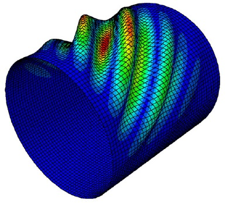
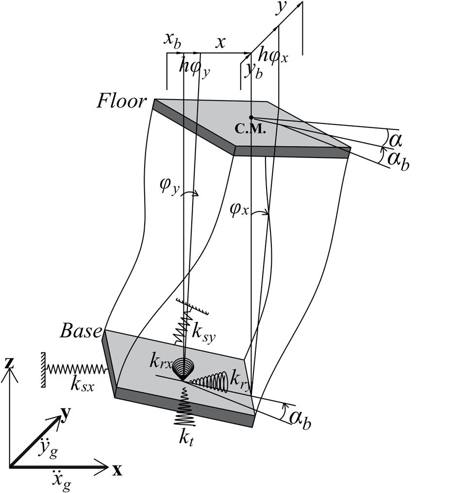
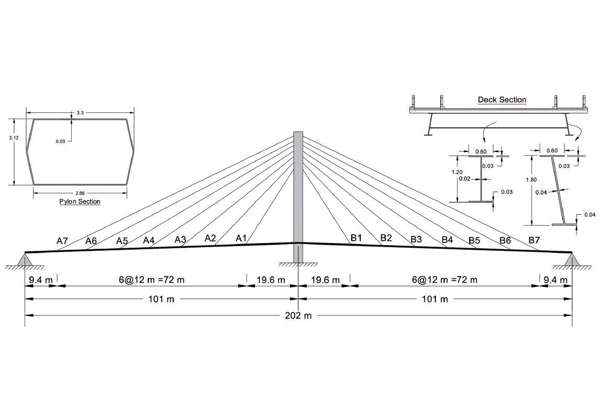
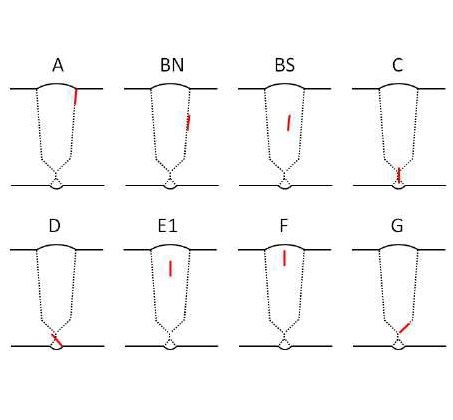
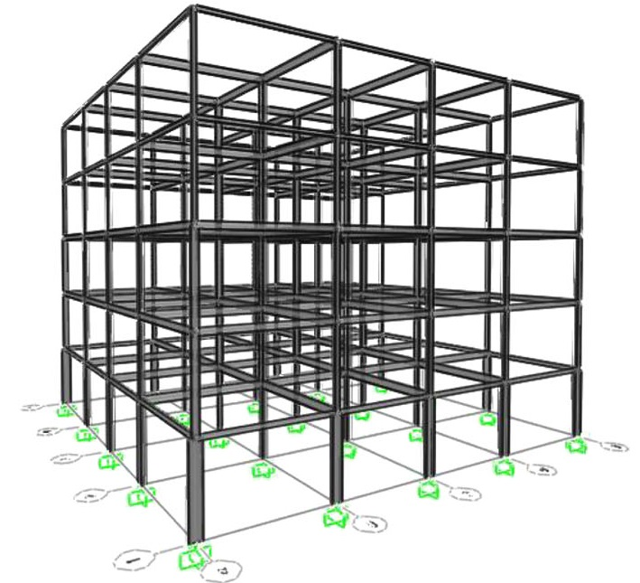
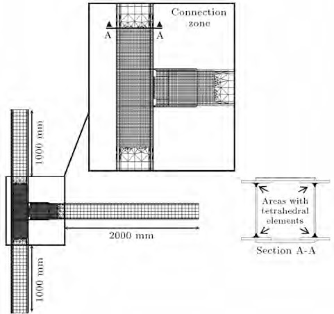

2020
|  |
(Sensors)
As the automated fiber placement (AFP) manufacturing technology is developed, curvilinear fiber path composite structures received extensive attention. Therefore, developing a design framework capable of optimizing such structures is a significant challenge for researchers and engineers in this domain. In this article, an open-source ABAQUS/MATLAB-based framework is developed for the bending-induced buckling design of variable-stiffness (VS) composite cylinders made using the AFP method. The framework is based on an interface between ABAQUS FE packages with MATLAB environment using Python scripting language. In this framework, the optimized fiber angle distribution of steered plies and associated bending-induced buckling load of its FE model is obtained by applying a meta-heuristic optimization algorithm. The developed Python script submits dimensions, angle distributions, as well as loading and boundary conditions to ABAQUS/CAE. This framework can be customized to meet industrial demands. To show such flexibility, different types of metaheuristic optimization algorithms and aspect ratios are applied, and the associated problems are optimized separately. In addition to the simplicity and versatility of the proposed framework, the results indicate the higher performance of a novel metaheuristic, the so-called Water Strider Algorithm (WSA). Moreover, this framework can be used for finite element modeling and analysis in the metamodeling step for composite cylinders with higher aspect ratios.
@article{kaveh2020open,
title={An open-source framework for the FE modeling and optimal design of fiber-steered variable-stiffness composite cylinders using water strider algorithm}, author={Kaveh, A and Malek, N Geran and Eslamlou, A Dadras and Azimi, M}, journal={Mechanics Based Design of Structures and Machines}, pages={1--21}, year={2020}, publisher={Taylor \& Francis} } |
|  |
(Journal of Sensor and Actuator Networks )
Seismic behavior of tall buildings depends upon the dynamic characteristics of the structure, as well as the base soil properties. To consider these factors, the equations of motion for a multi-story 3D building are developed to include irregularity and soil–structure interaction (SSI). Inspired by swarm intelligence in nature, a new control method, known as swarm-based parallel control (SPC), is proposed in this study to improve the seismic performance and minimize the pounding hazards, by sharing response data among the adjacent buildings at each floor level, using a wireless-sensors network (WSN). The response of individual buildings is investigated under historic earthquake loads, and the efficiencies of each different control method are compared. To verify the effectiveness of the proposed method, the numerical example of a 15-story, 3D building is modeled, and the responses are mitigated, using semi-actively controlled magnetorheological (MR) dampers employing the proposed control algorithm and fuzzy logic control (FLC), as well as the passive-on/off methods. The main discussion of this paper is the efficiency of the proposed SPC over the independent FLC during an event where one building is damaged or uncontrolled, and an active control based upon the linear quadratic regulator (LQR) is considered for the purpose of having a benchmark ideal result. Results indicate that in case of failure in the control system, as well as the damage in the structural elements, the proposed method can sense the damage in the building, and update the control forces in the other adjacent buildings, using the modified FLC, so as to avoid pounding by minimizing the responses.
@article{azimi2020swarm,
title={Swarm-based parallel control of adjacent irregular buildings considering soil--structure interaction}, author={Azimi, Mohsen and Molaei Yeznabad, Asghar}, journal={Journal of Sensor and Actuator Networks}, volume={9}, number={2}, pages={18}, year={2020}, publisher={MDPI} } |
2018
|  |
(Journal of Bridge Engineering)
Dynamic characteristics of cable-stayed bridges are widely accepted as valuable indicators to determine their performance in structural health monitoring (SHM). Although research has been extensively conducted in this area, such vibration-based physics methods still face great challenges in improving the effectiveness of damage identification from complex large-scale systems, particularly when other factors, including operational and environmental conditions, may cause high interference to the vibration response. Data-intensive machine learning techniques have been gaining attention due to their robustness for data classification. In this study, a framework was developed for data-driven structural diagnosis and damage detection using a support vector machine (SVM) integrated with enhanced feature extraction techniques for rapid condition assessment for large-scale cable-stayed bridges. The wavelet transform, Hilbert-Huang transform (HHT), and Teager-Huang transform (THT) were selected as three representative feature extraction methods. A kernel function-based SVM was used to facilitate the identification of damaged and undamaged cases. Numerical simulation was conducted to verify the effectiveness and accuracy of the proposed methods applied to a cable-stayed bridge. Results showed that the wavelet time-frequency analysis is more robust to noise than the HHT and THT, whereas the latter two transforms are more sensitive to capture damage/defects. Moreover, for regular signal data, the THT, due to the high time resolution, had the highest concentration and thus is the most sensitive compared with the other two methods. Parameters of interest, including impacts of damage level, damage location, sensor locations, and moving vehicle loading, are extensively discussed. All cases reveal that data-driven approaches could effectively map damage features over and under undamaged cases, dramatically enhancing the effectiveness and accuracy of data classification, which will greatly benefit in situ cable-stayed bridge assessment and management.
@article{pan2018time,
title={Time-frequency-based data-driven structural diagnosis and damage detection for cable-stayed bridges}, author={Pan, Hong and Azimi, Mohsen and Yan, Fei and Lin, Zhibin}, journal={Journal of Bridge Engineering}, volume={23}, number={6}, pages={04018033}, year={2018}, publisher={American Society of Civil Engineers} } |
2017

|
(Structural Control and Health Monitoring)
Much research has been conducted on structural control systems to improve the seismic performance of structures under earthquakes and, ultimately, offer high performance-resilient buildings beyond life risk mitigation. Among various structural control algorithms, semi-active control strategies have been widely accepted for overcoming some limitations existed in either passive or active control systems, thereby leading to better structural performance over their counterparts. In this study, a new semi-active control algorithm with minimum control parameters is developed to drive the hydraulic damper for effective control of the dynamic deformation of low- and high-rise building structures under earthquake loadings. The new controller allows less input and computation for determining the damping coefficient of the hydraulic dampers while maintaining a higher performance. V-braced buildings with three varying heights are used as prototypes to demonstrate the effectiveness of the proposed semi-active damper. Two critical parameters, maximum drift and acceleration of stories, are defined for the performance criteria. The simulation results show that the developed semi-active damper can significantly improve the seismic performance of the buildings in terms of controlled story drift and acceleration. By use of less input and reduced time delay effects, the proposed control system is comparable with those of existing semi-active controllers. The findings in this study will help engineers to design control systems for seismic risk mitigation and effectively facilitate the performance-based seismic design.
@article{azimi2017improved,
title={Improved semi-active control algorithm for hydraulic damper-based braced buildings}, author={Azimi, Mohsen and Rasoulnia, Akbar and Lin, Zhibin and Pan, Hong}, journal={Structural Control and Health Monitoring}, volume={24}, number={11}, pages={e1991}, year={2017}, publisher={Wiley Online Library} } |
2015
|  |
(Applied Mechanics and Materials)
Non-destructive evaluation (NDE) methods are widely accepted for quality control of welding in steel bridges. Recent development of advanced ultrasonic testing technologies enriched the categories of NDE methods used for steel bridges and more importantly these enhanced techniques provided more effective flaw detection and characterization. No guidelines, however, is available in existing bridge welding code for their more widespread applications to bridges. In this study, we overview the state-of-the-art advanced ultrasonic testing technologies in welding inspection. Benefits of the enhanced ultrasonic testing technologies are summarized, aiming to pave the way for deciding methods need for various steel bridge welding inspections.
@article{lin2015advanced,
title={Advanced ultrasonic testing technologies with applications to evaluation of steel bridge welding-an overview}, author={Lin, Zhi Bin and Azarmi, Fardad and Al-Kaseasbeh, Qusay and Azimi, Mohsen and Yan, Fei}, journal={Applied mechanics and materials}, volume={727}, pages={785--789}, year={2015}, publisher={Trans Tech Publ} } |
|  |
(The Structural Design of Tall and Special Buildings)
The present article is concerned with optimization of real size 3D steel structures under seismic loading based on response spectral and equivalent static analyses. The effect of lateral seismic loading distribution on the achieved optimum designs is investigated. An integrated optimization procedure with the objective of minimizing the self-weight of frame is simply performed interfacing SAP2000 and MATLAB® software in the form of parallel computing. The meta-heuristic algorithm chosen here is the cuckoo search (CS) algorithm recently developed as a type of population-based algorithm inspired by the behavior of some cuckoo species in combination with the Lévy flight behavior. The CS algorithm performs suitable selection of sections from the American Institute of Steel Construction (AISC) wide-flange (W) shapes list. Strength constraints of the AISC load and resistance factor design specification, geometric limitations, and displacement constraints are imposed on the considered frames. Results show similar weights for optimum designs using spectral and equivalent static analyses; however, different material distribution and seismic behaviors are observed.
@article{kaveh2015seismic,
title={Seismic optimal design of 3D steel frames using cuckoo search algorithm}, author={Kaveh, A and Bakhshpoori, T and Azimi, M}, journal={The Structural Design of Tall and Special Buildings}, volume={24}, number={3}, pages={210--227}, year={2015}, publisher={Wiley Online Library} } |
2013
|  |
(Scientia Iranica)
Double-I built-up sections were extensively used in Iran according to the previous versions of Iranian building codes. Despite the recent developments in steel moment connections, based on studies for I-beam to H-shaped column connections, there are not enough documents available for I-beam to double-I built-up column connections. Recent studies have revealed that connections with double-I built-up columns exhibit different behaviors comparing to the connections with H-shaped columns. Due to excessive out-of-plane deformations of the cover plate in the non-retrofitted moment connections, they have semi-rigid behavior. The objective of this study is to build on previous studies and to investigate strain distribution pattern and load transfer mechanism in the retrofitted I-beam to double-I built-up column connections using through plates and T-stiffeners. In this paper, both horizontal and vertical elements of the T-stiffeners were modified and studied. Analytical models were designed and analyzed under cyclic and monotonic loadings. Three different indices were computed in the connection region in order to assess the local failure potential; and the moment-rotation hysteretic curves were employed to evaluate the seismic performance of the connections. With the proposed configurations, strain is uniformly distributed within the critical elements. Moreover, excessive deformations of the column cover plate are eliminated.
@article{azimi_2013,
title={Retrofitting I-beam to double-I built-up column connections using through plates and T-stiffeners}, author={Ghodrati Amiri, Gholamreza and Azimi, Mohsen and Darvishan, Ehsan}, journal={Scientia Iranica}, volume={20}, number={6}, pages={1695--1707}, year={2013}, publisher={Sharif University of Technology} } |